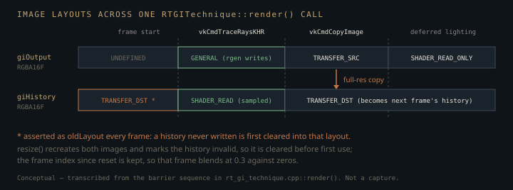

Monograph · Tree · ← Module hub · RT GI technique
hybrid
RT GI technique
1-bounce GI inject, material albedos.
One bounce, and the recursion cap that enforces it
The deferred pipeline's ambient term is one uniform scalar times albedo times AO —
vec3 ambient = vec3(lighting.ambientIntensity) * albedo * ao;shaders/core/deferred_lighting.frag:262with two equirect samples of the environment map, one standing in for diffuse irradiance and one for specular, added into the same accumulator when an env map is bound. Neither branch can know that a red wall stands beside a white floor, so the floor stays white. `RTGITechnique` replaces that guess with traced rays — but exactly once. The pipeline is created with a recursion limit of one, which is not a tuning knob but the premise the rest of the design rests on:
pipelineInfo.maxPipelineRayRecursionDepth = 1; // 1-bounce GIohao/render/rt/rt_gi_technique.cpp:343A closest-hit shader that cannot re-trace cannot ask "how much light reaches this point?" It can only report what it is. So it returns two numbers and stops — the instance's albedo and the hit distance, in one `vec4` payload whose alpha doubles as the miss flag:
giPayload = vec4(albedo, gl_HitTEXT);shaders/rt/rt_gi.rchit:20The bounce surface's illumination is then invented back in the raygen.
The estimator is exact; the radiance it integrates is not
For a Lambertian receiver of albedo $\rho$, outgoing radiance is
Drawing directions with density $p(\omega) = \cos\theta/\pi$ — a cosine-weighted hemisphere around the shading normal — makes the Monte-Carlo weight collapse completely:
with $N$ the ray count, $\omega_k$ the $k$-th sampled direction and $\theta_k$ its angle to the normal. That cancellation is why the receiver's $\pi$ and its $\cos\theta_k$ appear nowhere in the accumulation loop: the shader averages the radiances it got back and multiplies once by the receiver's GBuffer albedo, and that *is* the whole estimator. A cosine does appear inside that loop, but it belongs to the *bounce* surface — it is part of $L_i$, invented below.
vec3 dir = cosineSampleHemisphere(rng, N);shaders/rt/rt_gi.rgen:92indirectLight *= albedo;shaders/rt/rt_gi.rgen:128The outer estimator is therefore unbiased — for the hemisphere it actually samples. Two hard-coded constants shrink that hemisphere first. Rays start 0.05 world units off the shading point along the normal, so an occluder nearer than that is invisible to the integral:
vec3 origin = worldPos + N * 0.05; // bias to avoid self-intersectionshaders/rt/rt_gi.rgen:78and the trace truncates the domain at `tmax`, a hundred units out:
origin, 0.01, dir, 100.0, 0);shaders/rt/rt_gi.rgen:101Both are biases in the outer integral, not in $L_i$, and both quietly assume a metre-ish scene scale. $L_i$ is where the larger errors live. Since the hit shader returned only an albedo, the raygen reconstructs the bounce surface's own direct lighting from the one light packed into the push constants — an inverse-square falloff softened by one:
float falloff = pc.lightPosAndIntensity.w / (1.0 + lightDist * lightDist);shaders/rt/rt_gi.rgen:116and a cosine term that substitutes the negated ray direction for the hit surface's normal:
float hitNdotL = max(dot(normalize(toLightFromHit), -dir), 0.0);shaders/rt/rt_gi.rgen:119Three approximations stack in that reconstruction, each with a visible signature. Using $-\omega_k$ as the hit normal is exact only when the ray strikes a surface head-on; at grazing incidence the cosine is simply wrong. The `+1` kills the singularity at zero distance but darkens everything within about one world unit of the lamp. And there is no shadow ray from hit point to light, so a bounce surface contributes even with a wall between it and the lamp: indirect light leaks through geometry.
A fourth hides in the choice of light. That single light is whichever the deferred renderer ranks brightest that frame, scanning the `RenderScene`'s light list:
if (l.intensity > bestIntensity) {ohao/render/deferred/deferred_renderer.cpp:372The loop compares intensity and reads the light's kind only to skip emissive proxies — it never distinguishes the four real kinds of the enum:
enum class LightKind : uint32_t { Point, Directional, Spot, AreaRect, EmissiveProxy };ohao/render/scene/render_scene_types.hpp:72Whatever wins is handed to the shader as a position and a scalar, the position being the light's world position. A directional sun therefore becomes a point lamp parked at that position with $1/(1+d^2)$ falloff: wrong incident direction and wrong falloff at every bounce point, not merely dim. For one point lamp the single-light restriction itself costs nothing. With two comparable lights roughly half the indirect energy is absent, and the bleed colour snaps when the ranking flips. A scene with no light at all leaves the defaults in place, an intensity of zero, and every bounce contributes nothing:
float lightIntensity{0.0f};ohao/render/rt/render_technique.hpp:90One ray mask, and what it rejects
The raygen traces with a visibility mask of `0x01`, meaning "static geometry only":
uint rayMask = 0x01; // RT_RAY_MASK_STATIC (see rt_visibility.hpp)shaders/rt/rt_gi.rgen:87Vulkan intersects an instance when `ray_mask & instance_mask` is non-zero. Every live, visible instance in the `RenderScene`'s TLAS gets mask `0xFF`, so the AND passes; a hidden instance or a released slot gets zero, so the AND rejects it:
vi.mask = visible ? 0xFFu : 0u;ohao/render/scene/render_scene.cpp:102The mask therefore does one job today — it keeps hidden geometry out of the bounce — and the bit `0x01` never distinguishes static from dynamic, because the engine has no skeletal animation to separate. The host-side header still names the constant, but nothing includes it — the TLAS code writes the literal `0xFF`:
constexpr uint32_t MASK_STATIC_ONLY = 0xFF; // static geometry — visible to everythingohao/render/rt/rt_visibility.hpp:15The hit shader does no filtering of its own. It reads the instance's albedo by the TLAS custom index and returns it; nothing in it can reject a hit, so a hit the traversal reports always counts as a bounce surface. The header meant to keep the mask constants in sync across host and shader, `shaders/rt/includes/rt_masks.glsl`, has no `#include` anywhere in the tree: the two raygen shaders that use the mask, `rt_gi.rgen` and `rt_shadow.rgen`, each spell `0x01` as a literal.
The albedo itself comes from the instance table, not from a per-actor buffer filled by the TLAS build loop. Its home is `InstanceGpu::giAlbedoPacked`, whose `rgb` the closest-hit reads; the `.a` lane is a packed roughness and metallic that nothing reads:
vec3 albedo = instances[gl_InstanceCustomIndexEXT].giAlbedoPacked.rgb;shaders/rt/rt_gi.rchit:19A temporal filter of one lerp
The deferred renderer overrides the class default of 4 rays per pixel with 32, every frame, before each dispatch:
m_rtGI->setSampleCount(32); // quality over speedohao/render/deferred/deferred_renderer.cpp:378That still leaves visible noise, so the raygen ends with an exponential moving average against the previous frame:
float blendFactor = (frameIndex == 0u) ? 1.0 : 0.3;shaders/rt/rt_gi.rgen:134For static geometry and per-frame-independent noise, an EMA of weight $\alpha$ has variance
relative to one frame's estimate. At $\alpha = 0.3$ that is $0.176$, an effective window of $(2-\alpha)/\alpha \approx 5.7$ frames — so 32 traced rays would behave like about 180 for a camera holding still, *if* successive frames drew independent samples. The sampler is built for that. Each coordinate of each sample is its own integer PCG hash, nested over the render seed, the frame index, the pixel, the sample and the dimension:
uint h = pcg(pc.seed.x ^ pcg(pc.params.w ^ pcg(pixel.x ^ pcg(pixel.y ^ pcg((s << 4u) ^ dim)))));shaders/rt/rt_gi.rgen:39so a new frame index gives every ray a new direction, and the same seed and frame index give the same rays in every run. No test in the tree measures the correlation between frames, so 180 is still an estimate under that assumption, not a measurement.
"Holding still" is load-bearing. History is sampled at the *current* pixel's UV with no reprojection and no motion vectors, so under camera motion the filter blends in indirect light computed for a different surface. The frame index that gates the bootstrap and seeds the hash is `GIInput::frameIndex`, the deferred renderer's count of frames since its last temporal reset, and the seed is the renderer's render seed:
pc.params = glm::uvec4(input.width, input.height, m_sampleCount, input.frameIndex);ohao/render/rt/rt_gi_technique.cpp:632pc.seed = glm::uvec4(input.renderSeed, 0u, 0u, 0u);ohao/render/rt/rt_gi_technique.cpp:633`DeferredRenderer::resetTemporalState` zeroes that count and marks the history invalid together, and `VulkanRenderer::resetAccumulation` calls it for a deferred frame. History is therefore dropped exactly when the caller resets accumulation; a camera cut or a scene change that does not reset keeps blending the old history.
if (m_rtGI) m_rtGI->resetHistory();ohao/render/deferred/deferred_renderer.cpp:641The image dance, and the frame counter a resize keeps

History is not a ping-pong pair. It is a full-resolution `vkCmdCopyImage` of the output at the end of every frame — a redundant read-write of the whole RGBA16F surface, bought for descriptor views that never alternate. The barrier before the trace declares the history image's incoming layout unconditionally:
barriers[1].oldLayout = VK_IMAGE_LAYOUT_TRANSFER_DST_OPTIMAL; // cleared above, or last frame's copyohao/render/rt/rt_gi_technique.cpp:612That holds because nothing leaves the history anywhere else. A history image that has never been written is zeroed first, in that layout, so the raygen never blends undefined memory — a NaN there would survive every later frame:
if (!m_historyValid) {ohao/render/rt/rt_gi_technique.cpp:580and every later frame's copy ends with the history as its transfer destination. `resize()` destroys and recreates both images through `createOutputImage()`,
createOutputImage();ohao/render/rt/rt_gi_technique.cpp:701which marks the new history invalid, so it is cleared on its first use too. What a resize does not touch is the frame index: `DeferredRenderer::onResize` resizes the technique without resetting temporal state. The first frame after a resize therefore takes the steady-state weight of 0.3 against a history of zeros rather than the bootstrap 1.0: indirect light drops to 30 % of its estimate and recovers as $1 - 0.7^{n}$ over the following $n$ frames — about seven frames to come within 10 %.
The descriptor state does not race the GPU. The GBuffer sampler is created on the first `render()` and kept until `destroy()`, and the set it is written into is one of `MAX_FRAMES_IN_FLIGHT`, chosen by the caller's frame slot, so a set is never rewritten while a submitted command buffer still holds it:
const VkDescriptorSet set = m_descriptorSets[input.frameSlot];ohao/render/rt/rt_gi_technique.cpp:466One more dependency is missing from the graph rather than from `render()`. The RTGI pass declares reads on the normal and albedo handles only:
builder.readComputeTexture(m_graphAlbedoHandle);ohao/render/deferred/deferred_renderer.cpp:348while the raygen also samples GBuffer position at binding 2 — the attachment the sky test and every ray origin key off. There is no handle to declare: `importGraphTextures` imports depth, normal, albedo, the CSM shadow map, SSAO and the lighting target, never position. The pass rides instead on the GBuffer render pass's `finalLayout`, whose one outgoing subpass dependency targets `FRAGMENT_SHADER` — not `RAY_TRACING_SHADER_BIT_KHR`.
The alternative to the copy is two images and an index that flips each frame, which costs nothing. The copy buys a descriptor set written once per frame with fixed views — the same instinct that re-writes all seven descriptors every `render()` rather than caching them. Simplicity traded for full-res bandwidth, and the first thing to revisit if this pass ever needs to be fast.
176 bytes of push constants for 48 the shader reads
`GIPushConstants` is two `mat4`s, a `vec4` and two `uvec4`s — 176 bytes, all declared:
pushRange.size = sizeof(GIPushConstants);ohao/render/rt/rt_gi_technique.cpp:322The raygen reads the `vec4` and the two `uvec4`s only. It never touches `invView` or `invProj`, because it reconstructs nothing from depth — world position arrives straight from GBuffer0. Those unused matrices are 128 of the 176 bytes, and 176 exceeds the 128-byte `maxPushConstantsSize` floor the Vulkan specification guarantees. Nothing checks it: no code path in the engine ever reads `maxPushConstantsSize`. A device at the floor violates VUID-VkPipelineLayoutCreateInfo-pPushConstantRanges-00292, whose runtime consequence is undefined — not a guaranteed error code to branch on. Should `vkCreatePipelineLayout` return failure anyway, the fallback is orderly and loud:
OHAO_LOG(Error, render, "RTGI: failed to create pipeline layout");ohao/render/rt/rt_gi_technique.cpp:332`init()` then returns false, the renderer logs `DeferredRenderer: RTGI not available` (a warning on the `render` channel), and the frame runs without GI. Soft, but not silent.
The binding that is not there
The layout has seven bindings, numbered 0 to 4, 6 and 7. Binding 5 is left out, and both sides say why:
// Layout: 7 bindings (5 is unused: GI traces before lighting, so there is no directohao/render/rt/rt_gi_technique.cpp:157// (binding 5 is unused: GI traces before lighting, so this frame has no direct light yet)shaders/rt/rt_gi.rgen:14The gap is the fix this page keeps circling, seen from the scheduling side. A bounce surface's real incident light would come from the frame's own direct lighting instead of being re-derived from one push-constant lamp, but the RTGI pass records before the lighting pass, whose output it would need. Reading last frame's lighting would need a reprojected history the technique does not keep.
Where the bleed lands
The output is bound to the deferred lighting pass through the slot SSGI was built for, binding 11, gated by a flag bit set purely by that view being non-null. The lighting shader adds it to ambient, modulated by AO:
ambient += ssgiColor * ao;shaders/core/deferred_lighting.frag:268Note the missing `albedo` factor. That is a cross-file contract: the raygen already multiplied by the receiver's albedo when the estimator collapsed, so a second multiply here would square the surface colour. That same `ambient` accumulator is where IBL lands when an env map is bound, so GI and image-based lighting are additive, not exclusive.
The handover is per frame and conditional on rays having been traced. Before the graph executes, the renderer clears the lighting pass's GI view; the RTGI pass's record callback hands its output back only if `render()` actually dispatched — it returns early with no TLAS —
if (m_rtGI->rendered() && m_lightingPass)ohao/render/deferred/deferred_renderer.cpp:381and the lighting pass, registered after it, reads the member at its own record time: once to raise flag bit 3, without which the shader never samples binding 11 at all,
if (m_ssgiView != VK_NULL_HANDLE) m_params.flags |= 8; // SSGIohao/render/deferred/deferred_lighting_pass.cpp:172and once inside `writeDescriptorSet`, which rewrites that frame slot's whole set and chooses the real view over the dummy fallback. A frame that traced nothing therefore renders with no indirect term rather than with a stale or never-written GI image.
This is a one-bounce *irradiance-from-albedo* estimator, not a miniature path tracer. The Monte-Carlo outer layer is textbook-correct; every approximation lives in what the hit shader is permitted to know, which is one `vec4`.
Contracts
- The raygen multiplies indirect light by the receiving surface's albedo before writing. Any consumer of binding 11 must not multiply by albedo again.
- The bounce albedo is `InstanceGpu::giAlbedoPacked.rgb`, read from binding 6 by `gl_InstanceCustomIndexEXT`, which is the `RenderScene` instance slot. It travels on `InstanceDesc` (default 0.73 grey), so a spawner that wants a coloured bounce must set it when it creates or updates the instance; nothing derives it from the material.
- `setSSGITexture` must run after the per-frame reset and before the lighting pass records — today from the RTGI pass's callback, which the graph records first — or that frame's lighting pass takes the dummy view and never raises the SSGI flag bit. Hand over the view only when `rendered()` is true.
- `resize()` releases and re-clears the history image, but a resize does not reset the deferred renderer's frame index, so the first frame after it blends at 0.3 against zeros. Calling `resetTemporalState` on resize would restore the bootstrap weight (and restart TAA's history and the frame count that seeds RT samples with it).
- `GIInput::frameIndex` and `GIInput::renderSeed` are the only sources of sample variation: the same seed and frame index trace the same rays. A caller that passes a constant frame index freezes the noise in screen space and keeps blending at 0.3 from the second frame on.
- The sky test is `worldPos == vec3(0.0) && posSample.a == 0.0`, matching the GBuffer0 clear exactly, so a surface at the world origin with metallic 0 gets no GI.
Source files
shaders/core/deferred_lighting.fragohao/render/rt/rt_gi_technique.cppshaders/rt/rt_gi.rchitshaders/rt/rt_gi.rgenohao/render/deferred/deferred_renderer.cppohao/render/scene/render_scene_types.hppohao/render/rt/render_technique.hppohao/render/scene/render_scene.cppohao/render/rt/rt_visibility.hppohao/render/deferred/deferred_lighting_pass.cppohao/render/rt/rt_gi_technique.hppshaders/rt/rt_gi.rmissParent hub for the full pipeline narrative; this page is the file-level design unit. Sitemap · hover glossary terms anywhere.